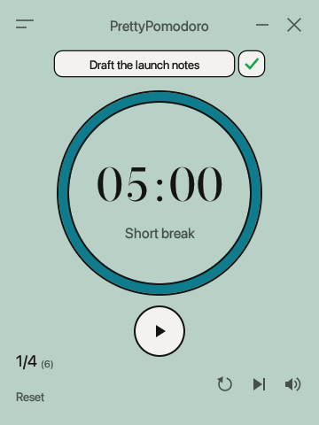

A Pomodoro timer worth looking at
A small, themeable timer for macOS, Windows and Linux.
Free and open source under the MIT license.

What it does
-
Pretty themes
27 built-in themes in five families, plus an editor for making your own.
-
Progress activity calendar
A heat map of every focus round you finish, with streaks and totals.
-
Private and free data sync
Your history syncs through a secret GitHub Gist on your own account.
-
Set goals for each run
Type a goal above the timer and tick it off when you get there.
-
Lightweight and efficient
Built with Rust: a download under 10 MB that uses no CPU while idle.